CHAPTER SIX

Key Financial Ratios
Ratios are mathematical calculations that the company can use to evaluate its performance. They help the company to determine whether trends are improving or deteriorating. They are calculated by comparing two numbers with each other. The most valuable use of ratios is to compare this year’s ratios with the same ratios for the previous year, and also with the ratios of other companies in a similar business. Ratios also serve as goals for future performance.
Statistical Indicators
Many of us use statistical indicators, many of which are ratios, to monitor the business. These key indicators include:
- Output per labor hour
- Capacity utilization
- Market share
- Sales orders
- Average length of a production run
- Passenger revenue miles (airlines)
- Responses to mailings (direct mail)
Some of these productivity measures are immediate in nature. They can be monitored on an hourly or daily basis, and management can make immediate adjustments in response to them. These are very much “real-time” indicators.
These statistical indicators are very much the domain of internal management. While internal statistical information would certainly be interesting to outsiders and might be valuable to them, they have little or no access to this information. Interestingly, in the automobile business, information concerning units produced, units sold, and available inventory is public information. But this is an exception.
First-level line managers in both sales and operations require detailed statistical information on a regular basis and also very frequently. Operations supervisors fine-tune machinery, redeploy labor resources, and manage the logistics of inventory. Sales managers direct daily or weekly sales calls, deploy resources at trade shows, and determine immediate customer satisfaction. Senior managers don’t require this degree of detail to carry out their responsibilities, and certainly not on an hourly, daily, or perhaps even weekly basis. The higher a manager’s level of responsibility, the more an overview is the necessary perspective. This explains why, as managers progress through the organization’s ranks, their concerns and perspectives become more financial and strategic.
Financial Ratios
Financial ratios provide more of an overview. They help management to monitor the company’s performance over a period of time, perhaps a week or a month. In order to fully appreciate and properly use the financial ratios, it is important that the analyst:
- Understand the business and its products.
- Analyze the company’s performance within the context of the economic climate.
- Be aware of the legal and regulatory issues that the company faces.
- Look at the ratios within the context of the competitive environment.
- Be knowledgeable about industry averages and ratio behavior.
People with a wide variety of interests use financial ratios to analyze the business. These include:
External
- Security analysts
- Potential and existing stockholders
- Bankers and other lenders
- Suppliers and their credit managers
- Competitors
- Regulators
Internal
- Board of directors
- Senior management
- Operations, sales, finance, human resources, and marketing
- Strategic planners
Each of these groups has its own perspectives and needs. Developing a marketing strategy requires an understanding of the company’s financial ability to support growth. Suppliers assess the company’s ability (not its willingness) to pay its bills in accordance with the agreed-upon credit terms.
Ratios must be evaluated within their context. The value of statistical indicators has been discussed. Many business and environmental factors have been identified. As mentioned previously, ratios are extremely valuable when they can be observed as part of a trend and also when they are compared with the same ratios for competitors.
Financial ratios can be divided into four major groupings:
- Liquidity ratios
- Working capital management ratios
- Measures of profitability
- Financial leverage ratios
There are many different ratios, and, for each, the exact definition may vary.
What follows is an extensive description of the key ratios, presented with very workable definitions.
Liquidity Ratios
Liquidity ratios measure and help in evaluating a company’s ability to pay its bills on a regular week-to-week or month-to-month basis. There are two commonly used ratios that help to evaluate this, the current ratio and the quick ratio.
Current Ratio
The current ratio compares current assets with current liabilities. The specific ratio is:
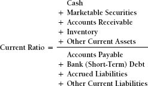
A current ratio below 1.0 means that current assets are less than current liabilities. This is a clear indication that the company has liquidity problems. However, a ratio in excess of 1.0 is not necessarily an indication that the company is sufficiently liquid. Higher is not necessarily better. The ratio may be high because the company has too much inventory or does a poor job of collecting its accounts receivable in a timely manner. Conversely, the ratio may be low because the company does not have or cannot afford the levels of inventory necessary to serve its customers in a competitive manner. Too much working capital is poor asset management; it is very expensive, can restrict cash flow, and inhibits the company’s ability to grow and prosper.
An appropriate ratio can be intelligently developed by evaluating each individual component. The questions to be answered include:
- How much cash and near cash does the company need in order to pay its bills and manage its very short-term liquidity?
- What credit terms should the company offer its customers as part of its strategy to satisfy those customers?
- What levels of finished goods inventory are needed to serve the marketplace?
- How much raw materials and components inventory is required to ensure efficient supply chain management and thereby efficient production operations?
These and other questions need to be answered in order to develop the current ratio that the company should try to achieve. Usually a “range of desirability” is created to adjust for seasonality and peak periods. So, an example of the target ratio to ensure intelligent asset management might be 1.8 to 2.2. Companies that manufacture winter clothing, for example, will have high finished goods inventory in the September–November time frame as they prepare to sell to retail chains and then very high accounts receivable in the November–January period after that winter clothing is sold and the manufacturer is waiting for its customers’ money.
Metropolitan Manufacturing Company Current Ratio
| 2016 | 2015 | |||
| Current Assets | $2,009,000 | $1,645,000 | ||
| Current Liabilities | $898,000 | $619,000 | ||
| Current Ratio | 2.23 | 2.65 |
Metropolitan’s current ratio has declined somewhat, although all of the absolute amounts have increased significantly. Bank debt and accounts payable have increased, primarily to finance the much higher levels of inventory. There is no evidence of a problem as long as the interest on the bank debt and the conditions or restrictions imposed by the loan are not too burdensome. The ratio itself remains at a reasonable level, especially for a manufacturing company.
Quick Ratio (“Acid Test ” Ratio)
The quick ratio has the same purpose as the current ratio, but its time frame is more immediate. It is calculated the same way as the current ratio, except that it does not include inventory. So the ratio is:
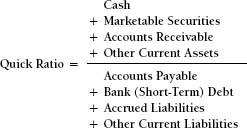
In order to use the quick ratio as an analytical tool, it must be understood that there is a great difference in liquidity between accounts receivable and inventory. When a company is owed money by its customers (accounts receivable), it has already done its work; it has fulfilled its commitment to those customers by delivering fine products and services. Whatever money was necessary to accomplish this has already been spent. However—and it is a big however—in order to “liquefy” its inventory, the company must spend additional funds. Raw material and work in process inventory have not yet become finished product; there is still work to be done, and funds must be spent. While finished goods inventory has been completed, it has not yet been sold and delivered. Therefore, inventory is not a very liquid asset. It is classified as a current asset because it is expected to become cash in less than a year, possibly within six months or even two months. Thus, inventory is a liquid asset when compared to fixed assets and long-term investments, but it is not liquid in the way that marketable securities and accounts receivable are.
Given all this, a quick ratio in the vicinity of 0.8 is probably acceptable. Because a service business has no or little inventory, its current and quick ratios will be the same.
| 2016 | 2015 | |||
| “Quick” Assets | $780,000 | $714,000 | ||
| Liabilities | $898,000 | $619,000 | ||
| Quick Ratio | 0.87 | 1.15 |
Metropolitan’s quick ratio has declined from a level that was extremely comfortable to one that is merely comfortable. This presumes, of course, that the terms of the bank debt are not onerous and that the company’s very heavy investment in inventory proves to be profitable. We will examine these issues further when we analyze working capital management.
Exceptions to Comfortable Levels
There are exceptions to our prior statement concerning comfortable levels for these liquidity ratios. If the current and quick ratios were in the comfortable range, but a substantial amount of the bank debt were due the next day, the future of the company would be in serious jeopardy. If the current ratio were in the comfortable range, but the finished goods inventory that it had on hand was not what the customers wanted at that time, then the company’s ability to deliver product to its customers in a timely manner would be impaired, even though its current ratio was acceptable.
Ratios of Working Capital Management
These ratios and measures assist a company in evaluating its performance regarding the management of the credit function, as reflected in its accounts receivable, and also the management of inventory.
Days’ Sales Outstanding
Days’ sales outstanding (DSO) measures the average number of days that the company is taking to collect accounts receivable from its customers. The formula is:
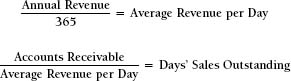
When a company extends credit terms, it gives its customers the opportunity to pay the company later rather than paying upon receipt of the company’s products or services. So the customer has received excellent products and services, which it can now use for its own profitability, yet it did not have to pay at the time it received them. Credit terms are provided because giving credit helps to sell product. Extending credit gives the company a competitive advantage (and not doing so would probably put it at a competitive disadvantage).
If average days’ sales outstanding is 43 days, that means that, on average, it is taking that many days to collect owed funds from the customer, from the date of the invoice to the date when the funds are collected. This should be measured against the credit terms of sale. If credit terms are 30 days, an average collection period of between 40 and 42 days should be perceived as acceptable. A collection period in excess of 50 days requires an examination of credit risk, the management of the credit process, and the future relationship with late-paying customers. Cash sales, if any, should be excluded from the calculation.
Metropolitan Manufacturing Company Days’ Sales Outstanding
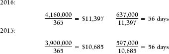
Assuming that Metropolitan’s credit terms are 30 days, the company’s accounts receivable are too high. The salespeople probably do not communicate these terms of sale clearly, if they communicate them at all, and collection procedures overall need to be improved. The company can add a “free” $11,397 to its bank account for each day that average days’ sales outstanding is reduced. To analyze receivables management further, and to ensure that this conclusion is not distorted by statistical or seasonal aberration, the finance manager should also prepare an aging of accounts receivable.
Aging of Accounts Receivable
An aging of accounts receivable is a detailed listing of how long the company has been waiting for its customers to pay their bills. Generally, much of the accounts receivable balance may not yet be due, as the amounts will have been billed less than 30 days earlier. A considerable sum might be more than 45 days old, or more than 15 days overdue. The existence of bills that are more than 45 days old is a strong indicator of the customers’ inability or unwillingness to pay, or of a feeling on the part of the customers that there is no particular pressure to do so.
The aging for Metropolitan Manufacturing Company as of December 31, 2016, is:
| Less than 30 days | $280,000 | |
| 30–45 days | 196,000 | |
| 45–60 days | 135,000 | |
| Above 60 days | 36,000 | |
| Total | $647,000 |
Metropolitan Manufacturing Company clearly has some problem receivables. The probability that the company will be able to collect those that are more than 60 days old is not great. The collections people in the accounting department clearly have challenges ahead if they are to get that money. The desirability of continuing to do business with those customers should be evaluated. Those customers whose receivables are in the 45- to 60-day range should receive some attention before they too become a worsening problem. Clearly, Metropolitan Manufacturing must change its attitude and those of its customers and begin to change some of its philosophies and practices.
Improving Management of Receivables
Reducing accounts receivable without jeopardizing sales volume is a most effective way for your company to improve cash flow. The following list gives some basic concepts of credit management that you should consider when you are negotiating with existing and potential customers. Not every idea will work in all situations, and some of these ideas may not be appropriate for your business at all. However, nothing will work if you don’t try it.
- Credit is a sales tool. Credit is granted to customers (permitting them to defer payment on merchandise that they already possess and are benefiting from) in order to motivate them to buy, and also in order to provide an additional competitive advantage. Put credit extension to the test. Will it affect whether or not the customer buys from you? Will it lead the customer to buy more or to buy again? You are entitled to your money. You have earned it; you have spent money to make the sale, and you have provided the customer with the finest product or service of its kind.
- Never make the extension of credit automatic. It is an integral part of the negotiating process. Train your sales, service, and delivery people to reinforce your credit strategies.
- Cheerfully extend credit if the customer asks for it and deserves it. Ask the customer how much time he would like to have. Never extend credit for an automatic 30 or 60 days. Some customers will ask for less time than you would otherwise have granted. Customers will pay faster in order to maintain credibility with a very important supplier.
- Train your customers to pay fast. Understanding that old habits die slowly, let the quality of your products and services, rather than your willingness to be a banker, be your customers’ motive for buying from you.
- Get the clock ticking. Agreed-upon credit terms should start the day the product is delivered, not the day when the invoice is mailed. Mail out invoices and statements more frequently. This is effective and is rarely noticed. Give the customer the invoice upon delivery, if possible. This reduces mailing expenses and makes the customer even more conscious of the responsibility to pay you fast.
- Never apologize for asking for your money. You earned it by providing the finest products and services in your marketplace.
- Use technology to become more efficient and effective. Invoices can be sent by e-mail. This alone saves a day or two compared to regular mail. Create a wire transfer mechanism whereby the customers’ money is sent directly from their bank account to your company’s bank account by wire. In their personal lives, many people are very comfortable paying their bills online. Your customers should pay this way, as well. These steps alone could save two or three days of mail time. In addition, the time it takes to clear an out-of-state check will be reduced or eliminated.
- Save money by encouraging use of plastic. Sending out an invoice for $50, $100, or even $200 is very expensive. The cost of invoicing and waiting for your money will shrink the profits on your sale. As an alternative, train the people who take phone orders to ask for a credit card on these and maybe even larger orders. This accelerates cash flow and the credit card fee is much less than the expense of an invoice. This clearly works on Internet orders.
- Search for opportunities to reduce your outstanding receivables. Start slowly, with your new customers and your least desirable existing customers. Train them and those who work for you. Set yourself a six-month target and work toward it. Watch your bank account grow.
Inventory Turnover Ratio
The inventory turnover ratio provides a helpful overview of how effectively the company manages what may be its most valuable asset, its inventory. It describes the relationship between the cost of the product that was sold over the course of a year and the average inventory the company has maintained to support those sales. The formula for the inventory turnover ratio is:
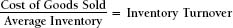
The resulting inventory turnover is expressed as follows:
- A turnover of 6 times translates to two months’ inventory on hand, on average.
- A turnover of 12 times translates to one month’s inventory on hand, on average.
- A turnover of 25 times translates to two week’s inventory on hand, on average.
Of course, determining the appropriate amount of inventory for a company is much more complex than calculating this ratio, however valuable the ratio may be. The cost of inventory includes the following:
- Acquisition cost
- Transportation in and out
- Insurance
- Personal property taxes
- Warehouse overhead
- Labor expense
- Computer and related expenses
- Interest expense
- Physical deterioration
- Seasonal obsolescence
The cost of not having enough inventory or of having the wrong inventory includes:
- Unhappy customers
- Lost market share
- Higher production costs in the form of overtime or extra shifts
- Purchasing small quantities at short notice
- Paying extra for accelerated transportation
Finished Goods Inventory
Efficiency of production. The more efficient the production operations are, the less finished product a company must maintain. If operations are inefficient, the company will have to maintain a safety stock of finished product to ensure adequate customer service.
Made to Order/Made for Stock. A company that makes product without an order in hand will have to maintain extra inventory because of the uncertainty associated with what products customers will require. A company that makes products in response to specific orders, especially custom-designed products, will require very little or no finished product on hand other than the inventory that is being accumulated for shipment.
Forecasting Sales. The more effectively a company can predict what its customers will want, the less finished product inventory it will require. If there is great uncertainty concerning the customers’ needs and/or the directions that the markets will take, the company will have to keep more product on hand to assure customer service.
Lead Times. The more notice the customers give the company concerning their product requirements, the less extra inventory the company must maintain.
Low-value-added distributors must have on hand adequate supplies of almost everything they sell in order to serve their customers competitively. In fact, their value added is precisely their having everything on hand, ready for immediate delivery or pickup. The ultimate low-value-added business is a supermarket. It changes the nature or content of the product very little; all it does is take crates of 12 or more items, open them, and put the items on convenient shelves. Its value added is having 40,000 of these products in one large, clean, comfortable room. And, a supermarket cannot run out of any essential items and hope to keep its customers happy.
Number of Warehouses. Some companies serve their entire marketplace from a single warehouse. This is efficient if the marketplace is geographically concentrated and can be properly served from that one location. It can be effective even if the marketplace is national in scope if the product is very valuable or orders are very large, making transportation a small part of the total cost. It can also be effective if deliveries are not too time-sensitive, so that surface or ocean transportation can be used.
However, in the absence of any of these conditions, many businesses must use a network of warehouses, and perhaps even satellites of those warehouses, to serve their customers. If a company has warehouses at multiple locations, inventory levels relative to volumes sold will be higher than those of a business with a single warehouse. Safety stocks will also be higher to protect against transportation uncertainties. Minimum stocks of each product line must be stored in order to assure customer service. The offset to these higher costs and inventory levels should be more timely customer service and more efficient transportation, with products being transported in bulk over long distances from the factory to each warehouse rather than being transported individually from the central warehouse to each customer. A financial analysis of these alternatives should be provided to assure cost efficiency.
Raw Materials/Purchased Components
Product Diversity. The greater the variety of products that a company manufactures, the greater the amount of raw materials and components that it must keep on hand. For each type of product, the company must keep a minimum stock of materials and components on hand. This is especially true when the company’s finished products have few, if any, components in common. Commonality of components contributes considerably to the minimization of inventory. An excellent example of this is the automobile industry. Many different models of cars actually have many components, including the frames, in common. In fact, there are many different models of cars that are actually the same car, despite their different appearances and perceptions of quality.
Supply-Chain Management. Technology has had a dramatic impact on inventory management and has resulted in drastic reductions in all forms of inventory. When a company goes online with its vendors, its product needs are automatically communicated to those vendors electronically. This shortens lead times, reduces mistakes, and accelerates the supply-chain process. Greater competitive intensity forces suppliers to provide faster delivery of high-quality products. Safety stock can be reduced when quality problems are reduced.
Concentration/Diversity of Vendors. Technology, especially the business-to-business capabilities of the Internet, has created both incredible supply-chain turmoil and incredible opportunity at the same time. Internet hookups between a vendor and its customers give that vendor a considerable competitive advantage, assuming that the vendor’s performance remains at the highest quality levels. On the other hand, product websites and transportation logistics have created a nationwide supply market. Companies used to buy product from relatively local vendors. Now they can access the Internet and locate suppliers all over the country—some of which they did not know even existed. This reduces the difficulty of market entry. The intensity of the resulting competition, along with very dependable transportation support from companies like FedEx and UPS, leads to lower purchase costs, shorter lead times, and less inventory.
Metropolitan Manufacturing Company Inventory Turnover
| 2016 | 2015 | |||||
| Cost of Goods Sold | $2,759,000 | $2,593,000 | (line 25) | |||
| Ending Inventory* | $1,229,000 | $931,000 | (line 4) | |||
| Inventory Turnover | 2.24 times | 2.79 times |
*In general, the inventory figure used is the average of the beginning and ending inventories, or perhaps a running average. In this example, for simplicity, I have used ending inventory.
The inventory turnover ratio for Metropolitan Manufacturing Company is quite low. This could be because Metropolitan’s business is very inventory intensive. Perhaps Metropolitan is a very vertically integrated manufacturing company. Or perhaps Metropolitan is a very service-intensive business with short lead times, resulting in a need for vast quantities of finished goods inventory. Or the company could be purchasing raw materials inventory in large quantities in order to take advantage of valuable quantity discounts. If this last explanation is true, Metropolitan’s gross profit margins should be considerably above the average for its industry. Alternatively, the high levels of inventory could be the result of gross inefficiencies, ineffective purchasing, or overly optimistic sales forecasts that are not being achieved. Knowledge of Metropolitan’s industry, its operations plan, and its competitors would be very valuable in reaching an accurate conclusion.
Measures of Profitability
These ratios assist management and others in the evaluation of the company’s achievements. They focus on:
- Profitability achieved by the management team (net income)
- Assets invested in the business (gross assets)
- Revenue achieved by the business (top line sales)
- The funds that the owners have invested in the business (equity)
Some review of terms will be helpful. The line numbers used here and later in the chapter refer to the financial statements in Chapters 1 and 2 (Exhibits 1-1 and 2-1).
24. Revenue: The value of products and services sold.
25. Cost of goods sold: The cost of the labor, materials, and manufacturing overhead used to produce the products sold.
26. Gross profit: Revenue minus cost of goods sold.
27. General and administrative expenses: The cost of operating the company itself; this category includes all other support spending necessary to conduct the business.
28. Depreciation (and other noncash) expenses.
29. Net income before taxes.
30. Provision for income taxes.
31. Net income.
Another figure that does not appear in Exhibit 2-1, but that will be used in this analysis, is earnings before interest, taxes, and depreciation and amortization, known by its acronym, EBITDA. If it appeared in the exhibit, it would be line 27a, and it will be referred to that way here.
Our analysis of these numbers would be improved if we knew more about the Metropolitan Manufacturing Company. This we call “context.” These items include:
- Its business and products
- The competitive environment
- Its degree of globalization
- Its budget for the year 2017 and its plans for subsequent years
- Legal and regulatory issues
- Whether it is a public or a private organization
- Its capacity utilization
- Its fixed cost/variable cost mix
The selection of the numbers to use in the analysis depends upon:
- What is being measured
- Who is doing the analysis
- Which managers are being measured
- Style and measurement attitude
Issues of Selecting Measurements
The board of directors of the company, as well as security analysts and credit analysts, is concerned with the performance of the company as a whole. Therefore, the measure that they use to evaluate companywide performance will probably be net income. Increasingly, however, security analysts, who are concerned with the company’s performance within the context of the stock market, are using EBITDA.
Many analysts consider the provision for income taxes to be a passive expense. To begin with, the amount of federal income taxes shown on the company’s income statement is not the actual amount of federal income taxes that the company paid. It is essentially the corporate tax rate, currently 34 percent, multiplied by the amount of net income before tax. As a result, many analysts use the pretax amount to measure profitability.
Many companies enjoy profitability in their international operations and also in their exporting from the United States. Of those, quite a few of these “American” companies are technically domiciled outside of the United States in what the IRS and others call “tax havens.” Others actually invoice international customers through these low tax havens, thereby avoiding U.S. corporate taxes. All of these companies, regardless of their tax strategy, report a provision for income tax of 34 percent, the American corporate tax rate. This is one of the major reasons why analysts use EBITDA, believing that using a net income amount distorts a true analysis of the company’s performance.
Analysts are often very concerned with and focus on the operating cash flow that was generated by the business. To look at this, they often use EBITDA. EBITDA is also used to evaluate the performance of those who manage individual businesses, strategic business units, and individual divisions and subsidiaries (in addition to the previous tax discussion). The rationale is that the managers of these entities are not responsible for, and therefore need not be concerned with, taxes and the income and expenses associated with corporate financings, i.e., interest income and interest expense. They are evaluated on those results for which they are responsible, and over which they have considerable control. Hence, operating cash flow is used as the metric, best defined as EBITDA.
To measure the performance of an individual product, gross profit should be used. The resulting ratio is the gross profit percentage, calculated as follows:
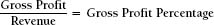
For Metropolitan Manufacturing Company in its entirety, this is:
| 2016 | 2015 | |||||
| Gross Profit | $1,401 | $1,307 | (line 26) | |||
| Revenue | $4,160 | $3,900 | (line 24) | |||
| Gross Profit Percentage | 34% | 34% |
It should be noted that in this discussion, gross profit and gross margin are considered to be synonymous terms and are used interchangeably. Some companies differentiate the two, which is an issue that we will discuss later when we deal specifically with product profitability analysis.
A gross margin of 34 percent is a considerable achievement for a manufacturing company. This suggests that the company is providing some value added through its business. A warehouse distributor might have gross margins in the 20 to 25 percent range, while a manufacturer of high-end medical products, pharmaceuticals, or computer chips might enjoy margins of as much as 60 to 70 percent on some of its products. We should note, however, that despite an additional investment in inventory of $298,000 in 2016, Metropolitan’s gross margin did not improve.
Return on assets (ROA) measures the profitability of the company relative to the total amount of assets the owners have invested in the business. These assets include working capital (cash, marketable securities, accounts receivable, and inventory), tangible assets (capital equipment and land and buildings), and financial assets (long-term marketable securities, subsidiaries, and intangible assets). The equation for return on assets is:
In addition to measuring the overall performance of the company, as return on assets does, return on equity (ROE) includes a measurement of the company’s ability to use borrowed funds (financial leverage) effectively as well as the owners’ money (stockholders’ equity). This will also affect the company’s ability to attract new investors. Without debt, a company’s ROA and ROE will be the same. The more debt is successfully used to expand the business, the greater the improvement in return on equity compared with return on assets will be. However, excessive reliance on borrowed funds involves considerable risk, as we will see later when we discuss financial leverage. The formula for return on equity is:
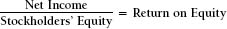
Technological progress over the past ten years has drastically changed the perception of the concept “investing in the business.” As we have stated elsewhere, an investment is the exposure of cash and other resources in the business to achieve stated profitability and other business goals. In accounting, an investment is the purchase of fixed assets. Most investments in the past 10 years have been in software and scientific research. These successful initiatives have dramatically improved productivity and profitability. For better or worse, the traditional ROA and ROE ratios do not measure these well.
Return on sales measures the overall operating efficiency of the company. Among the questions that it answers are: Is the production facility operating effectively? Are the administrative departments performing their responsibilities efficiently? As the company focuses its product mix towards more high-value-added, higher-margin products, the return on sales ratio should also improve. The equation for return on sales is:
Metropolitan Manufacturing Company Operating Performance
Return on Assets:
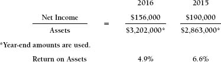
We can readily observe that not only has Metropolitan’s net income actually declined in dollar amounts, but its ROA has declined even more severely as a result of the increase in the company’s asset base.
Return on Equity:
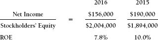
Metropolitan’s ROE has also declined. Notice that the company’s ROE is greater than its ROA because of its use of financial leverage (borrowed funds). This calculation, for simplicity, uses end-of-year balances. We also used these for the ROA calculation. Either is correct and accurate as long as the numbers used are consistent from year to year.
Metropolitan is reinvesting a considerable portion of its profits in the business rather than distributing most of the profits to its owners in the form of cash, as can be seen from the substantial increase in the retained earnings number (line 21) on the balance sheet. This is a very positive sign. Also, line 33 on the income statement tells us exactly how much of the profits were reinvested in the business. In 2016, this amount was $110,000 out of a total net income of $156,000. The difference is explained by a cash dividend payment of $46,000.
Management/owners reinvesting a sizable portion of the company’s net income in the business is a very positive sign because it demonstrates their confidence in the business. It also indicates that while the management recognizes the need to modernize and expand the business, it does not want to rely too heavily on debt to finance the company’s growth. Instead the managers are willing to use reinvested profits as part of the financing. Unfortunately, one short-term result of this decision may be, as happened here, a decline in ROE, and this may be perceived as negative. Had the net income stayed flat at $190,000 rather than declining, ROE would still have gone down, but not by as much as what was reported.
Therefore, companies sometimes face the dilemma of having to choose between the long-term benefits of expansion and modernization and the appearance of more favorable short-term results. Metropolitan’s owners were willing to take the longer-term view. If this were a public company, they would have to explain their decision to the Wall Street crowd.
Return on Sales:
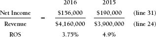
Metropolitan’s financial ratios clearly indicate declining performance. There are several possible explanations:
- Intense competition causing pricing pressure and declining margins
- Operational inefficiency
- Spending to prepare for future strategic moves
- Too small and in too many businesses compared with stronger competitors
- Aging technology
- Secular decline of its products
If reduced prices and/or volume were the cause of the decline in the ratios, we would normally expect gross profit margins to have declined as well. However, the gross profit margin did not decline, but remained constant at 34 percent. This could still be the explanation if the company reduced its manufacturing costs commensurately, as evidenced by lower cost of goods sold. Quantity discounts stemming from larger-quantity purchases of raw materials and purchased components could have contributed to maintenance of the margins. This probably did happen, since inventory levels were much higher and inventory turnover was much lower. So perhaps, the company protected its 34 percent gross margins through inventory purchases. While we consider these issues, let’s not lose sight of the fact that revenue did increase by more than 6 percent between 2015 and 2016 (line 24). It would be very helpful if we knew whether the increase in revenue was explained by price changes, volume changes, product mix changes, additions of new products, or a combination of these. This is critical information that typical financial reports may not provide, but should.
Notice that annual depreciation expense increased only slightly between 2015 and 2016 (line 28), even though the company made capital expenditures amounting to $34,000 (line 41). This suggests that the capital expenditures probably involved replacement of assets rather than expansion. If there had been an expansion, annual depreciation expenses would have increased.
General and administrative expenses increased appreciably between 2015 and 2016 (line 27). The backup detail would tell us whether this spending was an investment in the company’s future, such as expanding the sales organization or increased spending on research, or whether it was additional spending on important, but not critical, added staff.
Financial Leverage Ratios
Borrowing funds to finance expansion or modernization is a very positive strategy if the terms of the loan are not too burdensome. We certainly don’t want the interest rate to be too high. Perhaps more important, we want the cash flow benefits of the investments to be received before the debt becomes due. Many companies have run into financial problems because their bank debts came due before their investment projects achieved their forecasted benefits. In such cases, when the loans come due, the company has yet to generate the cash flow needed to repay them, and as a result, it finds itself in a very uncomfortable financial position. The term of the loan is usually more critical than the actual interest rate paid. If a company can achieve an after-tax return on investment of 25 percent on a project that will reach fruition in three years, whether the cost of the money needed to finance that project is 6.0 percent or 6.5 percent, is not going to change the decision to invest in the project as long as the loan has a maturity of more than three years. If the financing is a one-year bank loan, the company will not have the cash to repay it and may be forced to cut back the project and reduce expenses at exactly at the wrong time. It will probably be able to refinance that loan with the bank, but under terms and conditions that are favorable to the bank. The company will have few options. So while the cost of funds is important, you should focus on the repayment schedule, as well.
Debt/Equity Ratio
The debt/equity ratio measures risk from the perspective of both the company and existing and potential lenders. The primary risk to the company is that both principal and interest payments on debt are fixed costs. They must be paid even if the company’s business and its cash flow decline. The other risk to the company is that if its ratios decline, it might violate its loan agreements. This might trigger higher interest rates, or worse, the bank requiring immediate repayment of the loan.
Short-term bank debt is also a source of financial risk. Repayment of this debt is also a fixed cost, and its due date is more immediate than that of long-term debt. Remember that short-term debt is due in less than one year. Some analysts redefine the debt/ equity ratio to include bank debt, as follows:
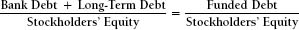
Funded debt refers to funds of all maturities borrowed from financial institutions. For most manufacturing companies, a debt/ equity ratio of more than 0.5 is perceived to be on the borderline of being risky. This would not be true if the company were a public utility or a very high-quality commercial real estate company. For manufacturing or service businesses, a funded debt/equity ratio in excess of 0.6 or 0.7 to 1 is interpreted as definitely approaching the “risky” stage.
Most private equity transactions, especially when a public company is taken private, involve a debt/equity ratio in excess of 5:1. These are very risky situations with high degrees of financial leverage. There are two circumstances that mitigate this risk. The first is that the subject companies usually generate a lot of cash and will generate more after layoffs and other efficiencies. The second is that very often the providers of the debt financing and the equity investors are the same organizations. They use their funds to finance the acquisition via debt because being repaid their principle is a tax-free event.
As the U.S. economy entered a very high-risk phase in the 2007–2009 time period, debt ratios of 1:1 and 2:1 had the appearance of being somewhat safe, at least within the context of companies with debt/equity ratios in the range up to 5:1 or worse. When the economy essentially crashed in late 2008 into early 2009, lenders went to the other extreme, becoming extremely very risk-averse. Credit availability was severely limited, and interest rates approached the range of 3 to 4 percent, if you could find funding at all. The only companies that were viewed positively during this period were those that were cash-rich and relatively debt-free. These included Apple, Dell, Oracle, and Microsoft.
In the 2011–2014 time period, companies expanded successfully but usually in high-value-added businesses. Much of this expansion was accomplished with outsourced resources, minimizing the need for debt financing. The higher-margin businesses have generated rather than consumed considerable cash to the point that by early 2015, companies had accumulated more free cash and had less debt perhaps than ever before.
Interest Coverage
This describes the cushion that the company has between the amount of cash it generates before interest expense and taxes and the amount of interest it must pay on its debt. This margin of safety is usually prescribed by the lending institutions as a condition of making the loan. The desired coverage ratio is based upon:
- The quality of the assets used as collateral, if any
- The profitability history of the company and its industry
- The predictability of the company’s earnings
The greater the predictability and certainty of the company’s earnings and the higher its growth, the lower the required interest coverage ratio will be. The figure used to measure the amount of cash available to pay interest expense is EBITDA.
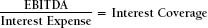
Sometimes the company is required to make regular payments of principal along with the interest. The payment of principal plus interest is called debt service. Such payment structures are exactly the same as the monthly payments that individuals make to the bank on a home mortgage, which include both principal and interest. When a company is required to repay its bank in this manner, some analysts and financial institutions will calculate the coverage ratio to include the principal payments as well as the interest. This is called debt service coverage. Still another version of this ratio also includes lease payments on the premise that long-term leases are in fact a form of equipment financing. Using the same version consistently once the methodology has been selected is very important.
Metropolitan Manufacturing Company Financial Leverage Ratios
Debt/Equity:
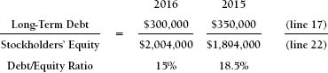
Metropolitan’s debt/equity ratio is very low. A ratio below 50 percent would probably be perceived as comfortable. Also, notice that Metropolitan paid off $50,000 in long-term debt. We know that this was voluntary because, by definition, long-term debt is not due in the upcoming year. Not only is low debt a favorable condition from a risk perspective, but the lenders will look upon reinvested net income as a very positive event. Metropolitan’s interest rate is probably not too high.
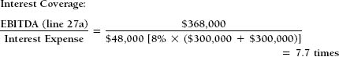
An interest coverage of 4 to 5 times is considered acceptable. A coverage ratio of 7.7 times is well within the comfort level. When this information is combined with a debt/equity ratio of 15 percent, it appears that Metropolitan Manufacturing is not at all at financial risk. It certainly has the capacity to borrow more funds.
Debt/Equity Ratio and Return on Equity
Exhibit 6-1 clearly demonstrates the risks and rewards that companies experience as they increase their levels of debt. The reward is an improved return on equity. The risk is higher interest expense and debt service requirements that become increasingly difficult to meet.
Using earnings before interest and taxes (EBIT), this company is achieving a return on assets of 20 percent, as follows:
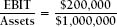
To simplify the example, we make the following assumptions:
The interest rate is 10 percent.
The tax rate is 50 percent.
The interest coverage calculation is shown in Exhibit 6-1.
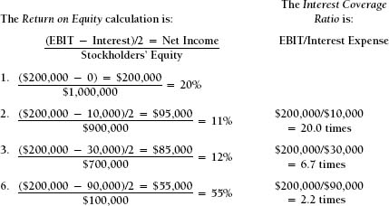
For a given level of earnings before interest and taxes, the more debt the company takes on in its capitalization structure, the greater the return on equity will be. However, the higher the debt/ equity ratio, the greater the possibility that a downturn in earnings
Exhibit 6-1. How Debt Affects ROE
will leave the company unable to meet its interest payment obligation. If a company with the capital structure shown in line 1 has a severe earnings downturn, this will cause extreme unhappiness among management and shareholders. But the company will still remain in business. If a company with the capital structure shown in line 6 experiences a similar earnings downturn, it will be in default on its loans.
Companies with very predictable, high-quality earnings can afford the risk of a high debt/equity ratio. This is especially true if they have a considerable amount of fixed assets to provide collateral for the loans. Economic conditions and current events aside, examples are commercial real estate and power utilities. Start-up and high-tech research companies often have no earnings at all, or at best very erratic earnings. They generally do not qualify for loans from financial institutions, and in fact depend on venture capital as a major source of financing.
The economic turmoil of the 2008–2009 period worked against the exact type of investment that generally was accustomed to having the greatest level of financial leverage, real estate. Between 1995 and 2005, many companies and individuals purchased real estate with very low down payments. As real estate inflation created a real estate bubble, those with 90 percent or higher debt levels made huge amounts of money if they sold the properties soon after purchasing them. A 20 percent return on assets with 90 percent debt financing produced a 200 percent return on equity. This became known as flipping, where the properties were sold soon after they were purchased. Those who participated in this financial equivalent of musical chairs were very successful until the music stopped and there were no more buyers. Some of those who were left holding properties lost everything. In the United States, the term underwater is used to describe the situation where the mortgage on the property exceeds the value of the property, if a buyer could be located.
As of 2015, many of the properties that went underwater in 2008 have still not recovered, even to a breakeven point. A new industry emerged in 2010, as private equity firms purchased thousands of single-family homes that were loan-defaulted, from the banks that sadly held the paper. These properties were then rented out to families that had lost their homes in 2008. Because new home construction in the 2014–2015 time period was far below levels previously achieved prior to 2008, the private equity firms are now in the process of selling off this real estate, usually at a great profit.
Revenue per Employee
This is a very valuable ratio that does not fit into the other categories we have discussed in this chapter. It is calculated as follows:
Annual Corporate Revenue / Total Employees
This an overall measure of the company’s performance, efficiency, profitability, and the value-added nature of its business.
To explore this issue, we examine the experience of one very successful high-quality company, Johnson & Johnson. They produce pharmaceuticals, medical products, and a wide variety of consumer products, all on a global scale.
In 2001 Johnson & Johnson required 101,000 employees to produce $32 billion in annual revenue. In 2011, 118,000 employees produced revenue of $65 billion. In 2001 this represented a revenue per employee of $317,000. In 2011 the equivalent number was $550,000 per employee. This represents a doubling of revenue with less than an 18 percent increase in employees over the 10-year period. What does this mean?
Revenue per employee is an all encompassing metric that is reflective of every aspect of the business. It can be improved by:
- Raising prices (but global competition inhibits this)
- Economies of scale (achieving more revenue with the same productive capacity)
- Becoming more efficient
- Improving the product mix (toward the most profitable businesses)
- Outsourcing to others who can do it better (mostly in the United States)
- Investing in technology
• to become even more efficient
• to accelerate throughput by creating capacity and reducing cost
• to reduce working capital investment
Johnson & Johnson had revenue per employee of approximately $550,000; we reached this number by dividing its annual revenue by the total number of employees ($65 billion / 118,000 = $550,847)
Had Johnson & Johnson remained at revenue per employee of $317,000 (its prior experience), it would have required—using our same formula—205,047 employees ($65 billion / $317,000 = 205,047 employees). They would have needed the full 205,000 employees had productivity not improved. But it did, dramatically—and because of the many improvements, the company actually had only 118,000 employees, a savings of approximately 80,000 employees. The additional expenses that Johnson & Johnson would have incurred would have essentially destroyed its profitability. Most corporations have had similar achievements over the years, although Johnson & Johnson’s performance is exceptional.
Did Johnson & Johnson create jobs? Yes it did. Approximately 18,000 new employees during these ten years. How did their improved employee productivity impact our economy?
The 80,000 additional workers would have driven up wages and their inflationary impact. Its corporate profits (and resulting tax payments) would have essentially been eliminated. Its ability to compete internationally would have been severely impaired. It would not have developed and/or purchased large amounts of new technology.
Now multiply this experience by the one thousand companies represented by the Fortune 1000. This provides a good description of our current economic situation and its near-term future.
The loss of some jobs in recent years has not resulted from the recession or from U. S. government economic policies. The recession certainly caused serious problems but it also accelerated a secular trend that was already well in place. This “loss” (really the absence of part of the theoretical gain) is the result of our economy’s incredible advancement in the use of technology and its improved management methods that together have led to greater efficiency and profitability.
When you take the ratio matching test in Exhibit D, note the differences among the companies in their revenue per employee ratios. They are very different among industries from as low as $200,00 per employee (supermarkets, lower end retail stores) to over a million dollars per employee for oil drilling and refineries. The one clear conclusion for using this as a benchmark (and you should) is that for your company, it should improve every year.
Ratios: Quick and Dirty
Here are four ratios to look at if you want to scan the financials, get a quick overview of the story they tell, and then later, at your leisure, do all of the detailed ratio calculations.
The current ratio: If it is less than 1.0, the company is probably having liquidity issues and is having difficulty paying its bills. If, however, the ratio is greater than 1.0, as we said earlier in this chapter, no significance can be attached.
Days’ sales outstanding (DSO): If it is more than 60 days and getting longer, the company is having serious cash flow issues and is probably hesitant to pressure its customers for payment out of fear of losing customers.
Gross profit: If the gross profit percentage is declining, inefficiencies in production might be getting worse. If the percentage is declining but revenue is growing, the company is using selling price to get more business. If the percentage is improving but revenue is flat or declining, the company is improving cash flow by getting rid of its least desirable businesses. None of these are desirable.
Debt/equity ratio: If this ratio (long-term debt divided by equity) is less than 1.0 maybe up to 1.5, the company is not seriously in debt as long as it is growing. A ratio higher than 2.0 implies that the company will have to constrain investing to get the cash to pay off debt. This is more severe if the current ratio is less than 1.0.